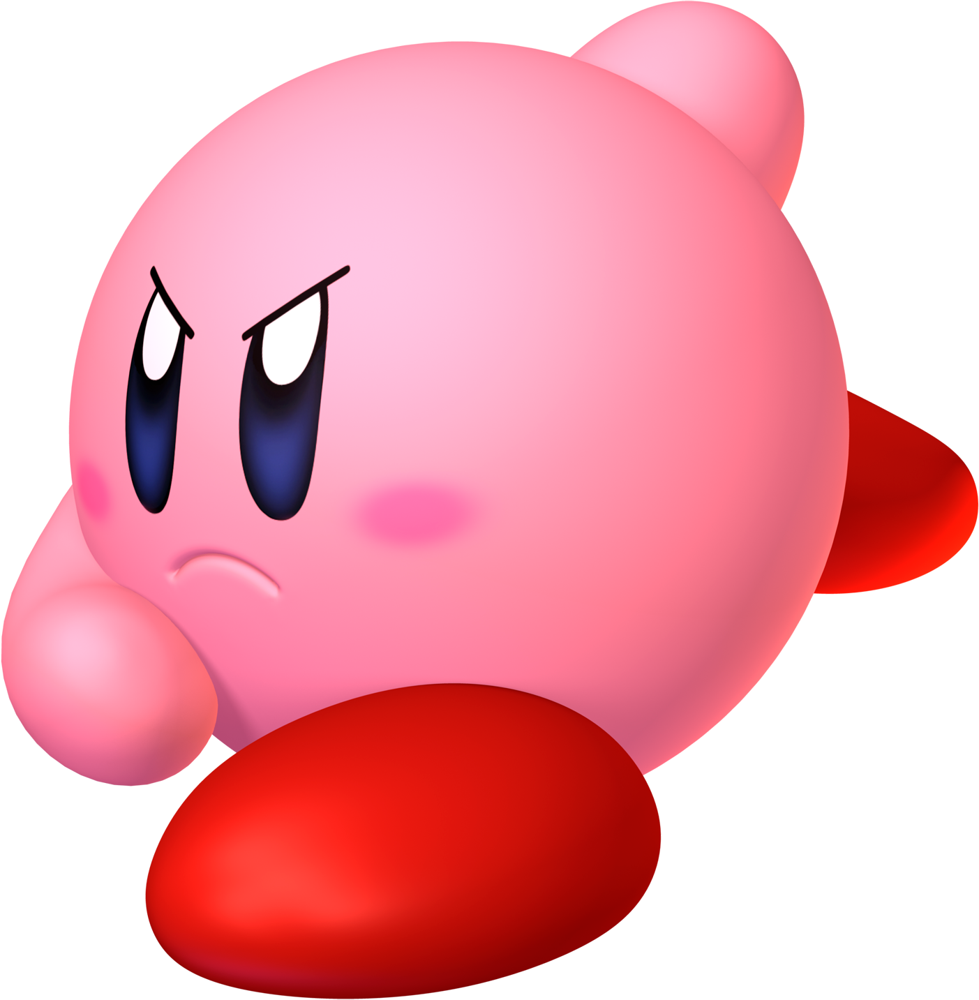

Kirby’s Concept and Creation
Kirby was created by video game designer Masahiro Sakurai as the player character of the 1992 game Kirby's Dream Land. The character's design was intended to serve as placeholder graphics for the game's original protagonist in early development and thus was given a simplistic ball-like appearance. Sakurai switched to the placeholder design for the final character design when he believed that it served the character better. The character was known as Popopo during development until the name "Kirby" was chosen from a draft list of potential names. Shigeru Miyamoto stated that "Kirby" was chosen in honor of American lawyer John Kirby, who defended Nintendo in the Universal City Studios, Inc. v. Nintendo Co., Ltd. case in 1984 and that the guttural-sounding name contrasted amusingly with the character's cute appearance. Kirby appears white in Kirby's Dream Land due to the grayscale palette of the Game Boy system. Sakurai intended the character to be pink, though Miyamoto originally wanted the character to be yellow. Kirby does appear white in the game's North American promotional materials and artwork to reflect the character's in-game appearance.
In North America, Kirby consistently appears in artwork with a more striking, bolder expression than in Japan, where his expression is more relaxed. Nintendo has said that the more battle-ready appearance appeals to a wider audience in North America.